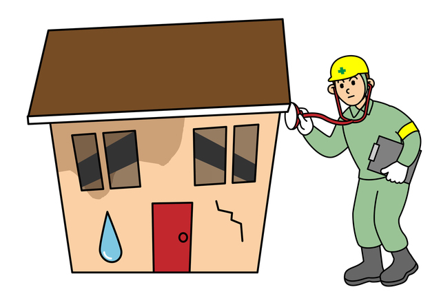
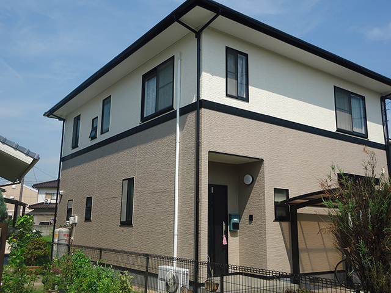
外壁塗装工事
外壁の塗装は美観のためだけではなく、建物を保護するという大事な役割を担っています。塗料の種類にもよりますが、約10年ごとの塗り替えが望ましいです。
モルタル壁の場合、劣化の症状としてモルタルの乾燥収縮・躯体のひずみなどから起こるひび割れ（クラック・ヘアクラック）、そして塗膜劣化（チョーキング現象）などがあげられます。クラックが起こると外壁内に雨水などが侵入し、モルタル壁自体が過剰な湿気を含むようになり、「外壁」「塗膜」相互の付着力低下が引き起こされ、密着不良となり塗膜剥離が生じます。さらにひどくなりますと、外壁内部の構造材（木材など）の腐食につながります。
サイディング壁の場合、上記に加えて、継手部分に充填しているシーリング材が劣化し、ここから雨水などが侵入し、サイディングの裏側から壁が劣化していきます。
大切な家を守るためにも、早い段階での塗り替えをおすすめします。
外壁塗装工事の流れを見る
屋根塗装工事
屋根は紫外線・雨など常にきびしい条件にさらされている場所ですので、定期的なメンテナンスが必要となります。
コロニアル・カラーベストの場合、化粧層の劣化（塗膜の劣化・化粧セメントの劣化など）にともない粉化すると、吸水率が上がり収縮・膨張をくり返し、屋根材自体が反る症状が現れます。また屋根材自体の強度が損なわれて、割れやすくなります。
後に多額の費用をかけて葺き替え工事とならないためにも、上記の症状が現れる前に塗装することをおすすめします。
屋根塗装工事の流れを見る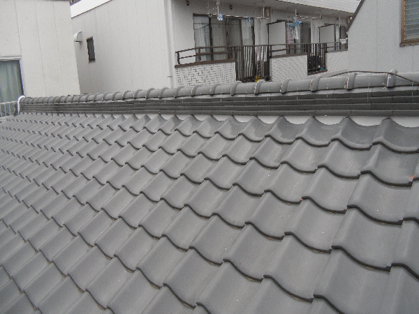
屋根葺き替え・修繕工事
特に瓦屋根の漆喰部分などは、状態が悪いと雨漏り・棟（屋根の頂上部分）がくずれてしまう場合があります。雨漏りしますと、内部の構造材（木材など）が過剰な水分を含みますので、その結果、野地板などが腐食し葺き替え工事となるケースがかなりあります。
雨の侵入度合い・木材の劣化度合いによっては、漆喰工事・その他補修工事ですみますので、定期的に点検することをおすすめします。
屋根修繕工事の流れを見る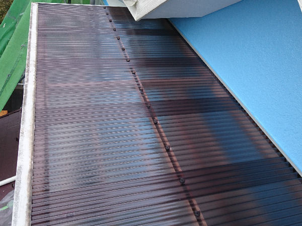
波板張り替え工事
強風時にパタパタ音がする・割れによりベランダに雨が漏っている・変色している等の症状がある場合は、波板の交換をおすすめします。
当店が使用している波板の材質は、ポリカーボネート製となります。既存に多く見られる塩化ビニール製の波板より熱に強く、曲がりにも強いので、変色しにくい・割れにくい・寿命が長いといった特徴があります。
また、ベランダ屋根は外から見てとても目立ちますので、波板を交換するだけで家の印象がかなり変わります。
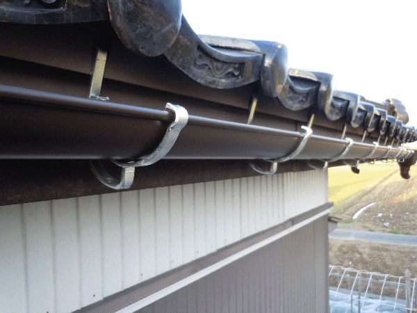
雨樋交換・補修工事
雨樋の場合、経年劣化により継手部分の接着材がはがれ雨水が流れ出たり、雪などの重み・破風板の劣化により、金具部分が垂れ下がり雨樋が波打ち、ところどころ水たまりが雨樋の中でできてしまい、きちんと排水できなくなります。
劣化状況によっては、外壁・基礎・土間（犬走り）等の寿命も早めますので、定期的に点検することをおすすめします。
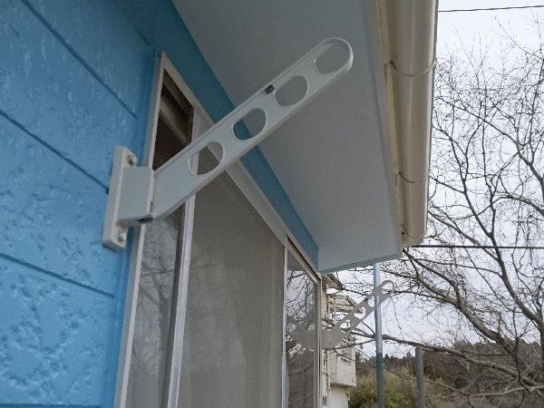
外装工事
その他、コーキング打ち替え工事、物干し台取付工事等、どんな小さな工事でもお受けしていますので、お気軽にご相談ください。
工事時期の目安
塗装工事時期の目安
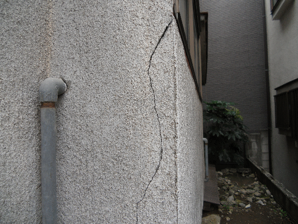
クラック（割れ）が入っている
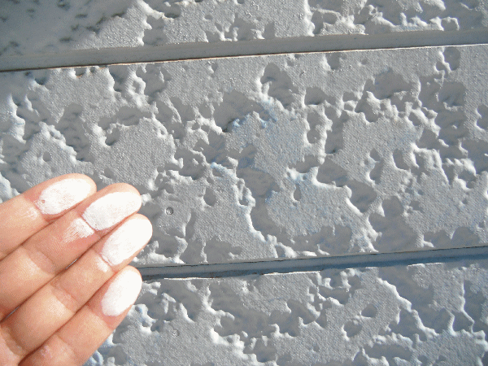
チョーキング現象
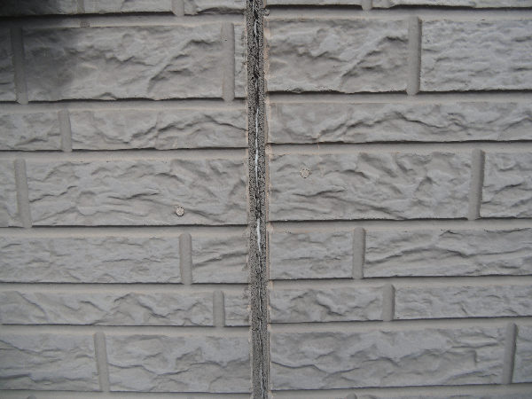
コーキングの劣化
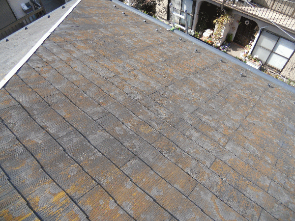
コケ・カビが生えている
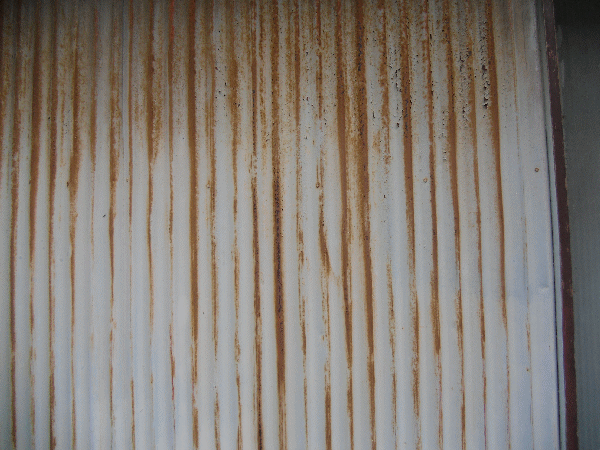
サビ・塗膜のはがれ

前回の塗装・新築から10年経っている
屋根葺き替え・修繕工事時期の目安
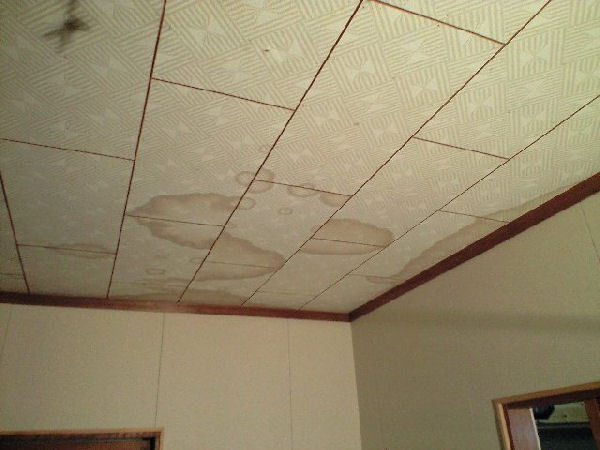
天井にしみがある

漆喰がはがれている
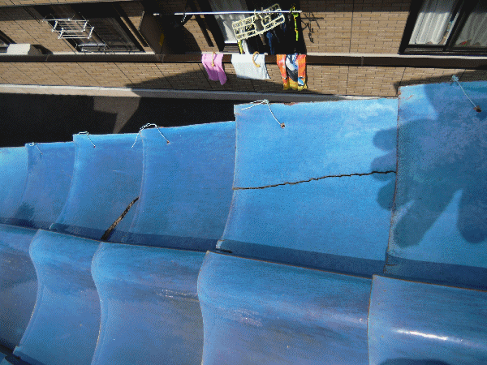
瓦が割れている
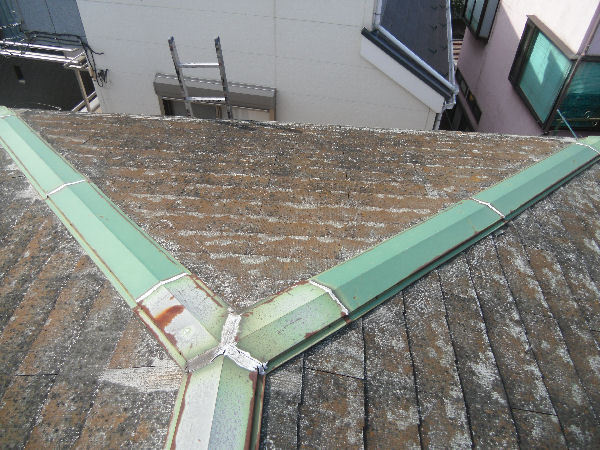
20年前後何もしていない
上記のような症状、破損等があった場合は工事が必要となります。まずはお気軽にご相談ください。